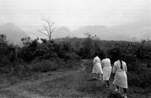

Union International - The IWW and the Other Campaign (Part I)
Submitted on Tue, 08/08/2006 - 3:43am
Disclaimer - The following is an editorial by members of the Bay Area; it is not currently the official position of the IWW.
By Zapatita - Bay Area General Membership Branch, IWW
The Zapatista Army of National Liberation, (EZLN), has been fighting for democracy, liberty and justice in the Southern Indigenous lands in Mexico well before 1994. Today, the Zapatistas are struggling for more than the indigenous people in Chiapas, but for all those across the world who have been exploited and robbed by the rich and the bad governments that serve them. Like the I.W.W., the EZLN is a humanitarian internationalist organization, who fight for the "humble and simple" people, the common, everyday working folks who belong to "civil society", the majority who do not belong to political parties.
It was these folks, the working class, who from all over the globe, stood up for the Zapatistas when they first publicly began to defend their lands in Chiapas. The large international support that was received in many different forms, was really what prevented worse state funded attacks against those resisting in indigenous communities. Yet again recently, in Atenco and Oaxaca, the world witnessed the same brutal class war against organized indigenous and Mexican workers and their communities. The electoral fraud in Mexico has left the doors open to growing violence and repression. Once again, the need for international support from fellow workers is critical.
In the Sixth Declaration of la Selva Laconda, the Zapatistas recognize and thank all who demonstrated support, from those individuals and organizations within Mexico and from all over the world. Prior to the declaration, many international 'Encuentros', (encounters or gatherings) have allowed the Zapatistas to learn from the other struggles against capitalist empire. They express in the declaration, that after listening and learning from others,
"...our hearts were not the same as before, when we began our struggle. It was larger, because now we had touched the hearts of many good people. And we also saw that our heart was more hurt...not wounded by the deceits of the bad governments, but because when we touched the hearts of others, we also touched their sorrows. It was as if we were seeing ourselves in a mirror".
The EZLN reports that since the first few years of the Zapatista communities organizing, government documents show that it was only in those indigenous territories which show significant improvements to living conditions. Zapatistas note that the progress has only been possible by the support they had received from the support of "civil societies", the working class, grass-roots organizations throughout the world. "As if all these people have made "another world is possible" a reality, but through actions and not just words".
Now, twelve years after the EZLN declared war against neoliberalism, against oblivion, they understand that the only way to continue going forward is by being united with other communities with similar struggles. In Zapatista words, "A new step forward in the indigenous struggle is only possible if the indigenous join together with the workers, campesinos, students, teachers...the workers of the city and the countryside". This "globalized rebellion" includes not only the working class, but also focuses on the resistance of women, of the youth, of the LGBT community, of immigrants and migrants, and many other groups who are not seen until they rise up against empire, against capitalist exploitation and in defense of their own human dignity, and that of others.
The Zapatista’s Other Campaign is organizing in a national campaign, (that is non-electoral), to listen and help organize the word of the Mexican people in order to create real democracy, liberty and justice. This other form of political organizing, for a "program of national struggle" is aiming to create a new Constitution, from below and for below. It is also a way for the Zapatistas to communicate to all those who are resisting and fighting, to show them they are not alone, to learn from other people's struggles, and to both give and receive hope and strength to continue.
The Other Campaign is not interested in leading the movement, or to demand that others do as they have done...its purpose is to find agreements between communities in resistance, and at least in Mexico, to develop a "national program of struggle".
Internationally, the Other Campaign’s international Encuentros for its adherents have already helped create new relationships of mutual respect and support, with those who are against neoliberalism and for humanity. Autonomy and independence of organizations is respected, as the purpose is to build alliances among those with mutual interests, and mutual enemies.
The Clandestine Revolutionary Indigenous Committee, which is the General Command of the Zapatista Army of National Liberation, has by the Sexta Declaration, send out an inspiring invitation to every (non-electoral) organization and individual who are also against capitalist globalization, who believe in national sovernty against corporate privatization, to become adherents to the Other Campaign, and to participate to encourage the growth of alliances, and help further develop another form of organizing, that is from the workers and for the workers, and of course, very much from the heart.
Throughout its history, the IWW has not only encouraged, but has very much been a part of international movements for working class solidarity. Today, a great opportunity presents itself again, to unite with those, from below and to the left. As adherents, the IWW could demonstrate their support to the Zapatistas, and many other worker communities in resistance. IWW members can be invited to future Encuentros, and individually or as an organization, contribute in how we may. Perhaps by participating in the “Other Campaign”, our hearts will also grow a bit more, as we learn and unite with fellow workers in different but very similar struggles.